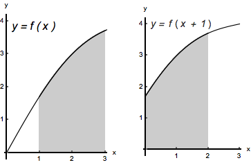

- (a)
- Evaluate the following integrals.
- (i)
- \(\int _{0}^{2} f(x+1)\d x\) Let \(u=x+1\). Then \(\d u=\d x\); when \(x=0\), \(u=1\); when \(x=2\), \(u=3\). Therefore,
\(\int _{0}^{2} f(x+1)\d x=\int _{1}^{3} f(u)\d u=4\)
Notice that the region whose net area is given by the integral \(\int _{0}^{2} f(x+1)\d x\) is just the region whose net area is given by the integral \(\int _{1}^{3} f(x)\d x\), only “shifted to the left by 1". Obviously, their net areas have to be equal. We illustrate this in the figure below.
- (ii)
- \(\int _{1}^{9} 3\dfrac {f(\sqrt {x})}{\sqrt {x}}\d x\) Let \(u=\sqrt {x}\). Then \(\d u=\dfrac {1}{2\sqrt {x}} \d x\); when \(x=1\), \(u=1\); when \(x=9\), \(u=3\). Therefore,
\(\int _{1}^{9} 3\dfrac {f(\sqrt {x})}{\sqrt {x}}\d x=\int _{1}^{9} 3\cdot 2\cdot \dfrac {f(\sqrt {x})}{2\cdot \sqrt {x}}\d x=\int _{1}^{3} 6f(u)\d u=6\int _{1}^{3} f(u)\d u=6\cdot 4=24 \) - (iii)
- \(\int _{\frac {1}{3}}^{1} f(3x)\d x\)
- (iv)
- \(\int _{2}^{4} 3f(x-1)\d x\)
- (v)
- \(\int _{0}^{\sqrt {2}} 3x f(x^2+1)\d x\) Let \(u=x^2+1\). Then \(\d u= 2x\d x\); when \(x=0\), \(u=1\); when \(x=\sqrt {2}\), \(u=3\). Therefore,
\(\int _{0}^{\sqrt {2}} 3x f(x^2+1)\d x=\int _{0}^{\sqrt {2}} 3\cdot \dfrac {2}{2}\cdot x f(x^2+1)\d x=\int _{1}^{3} \dfrac {3}{2}\cdot f(u)\d u= \dfrac {3}{2}\cdot \int _{1}^{3} f(u)\d u= \dfrac {3}{2}\cdot 4=6\)
- (b)
- Assume that \(f\) is odd. Evaluate \(\int _{-3}^{-1} f(x)\d x\)
- (c)
- Assume that \(f\) is even. Evaluate \(\int _{-3}^{-1} f(x)\d x\)